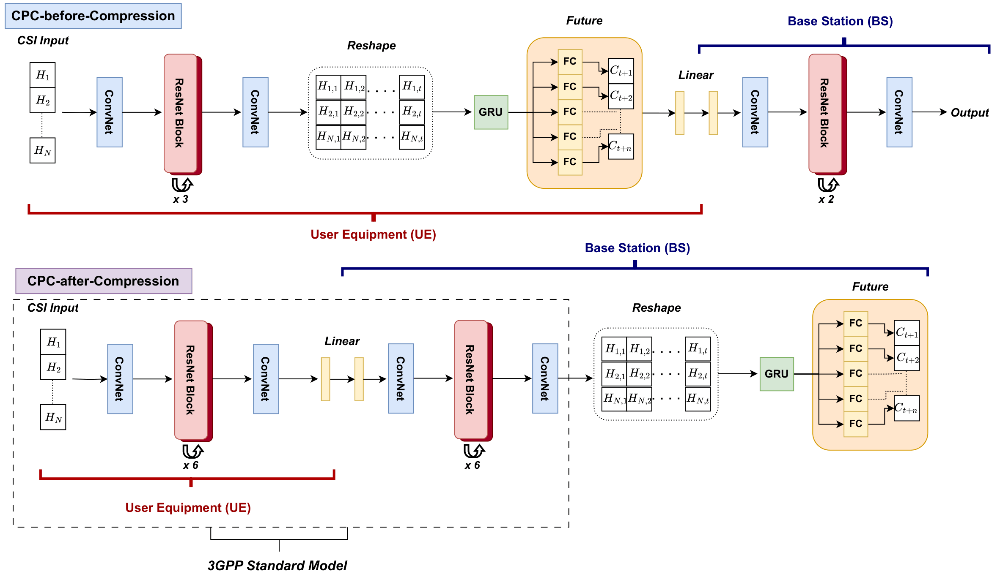
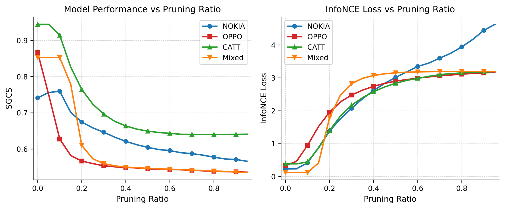
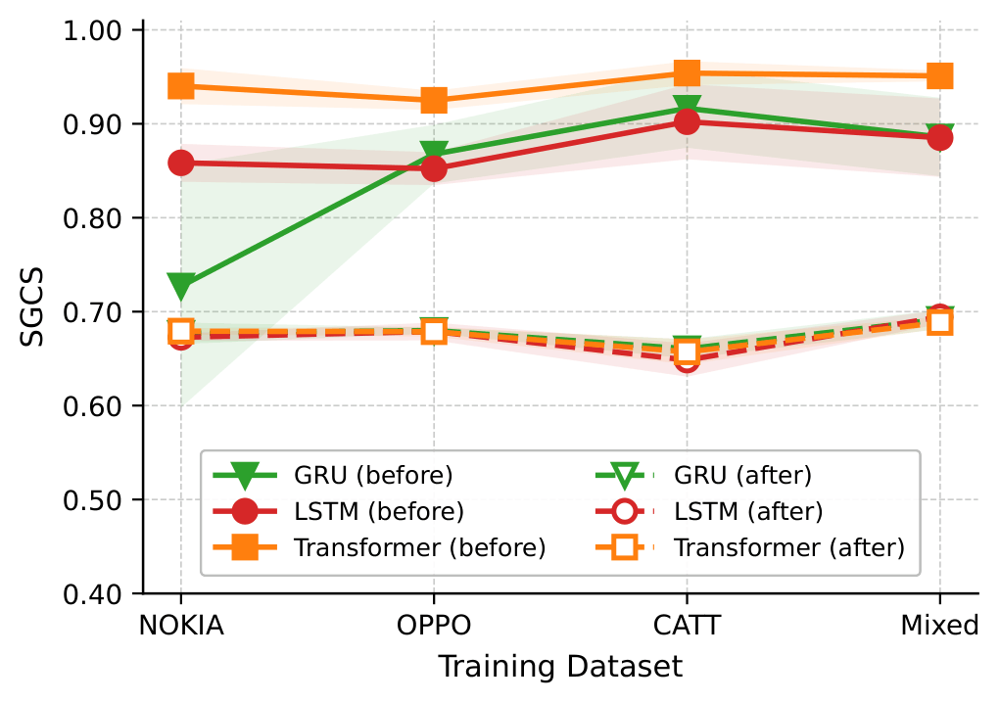
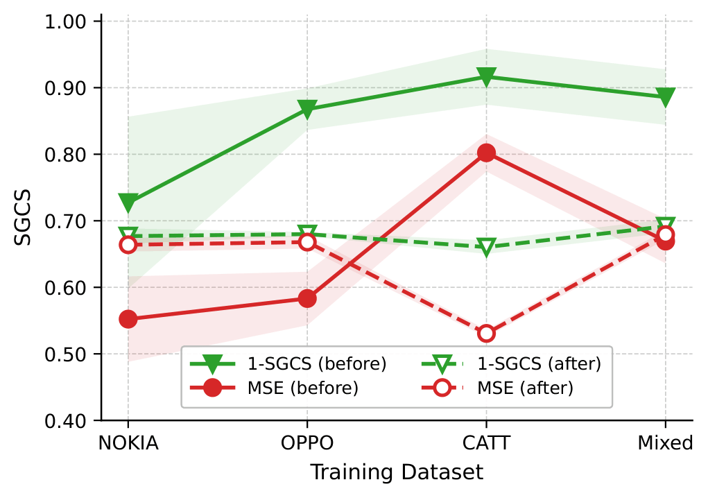

1 Department of Electrical Engineering and Computer Science, York University, Toronto, ON, Canada
2 Nokia France, Paris-Saclay (Massy), France
3 Nokia UK, Cambridge, United Kingdom
IEEE Transactions on Neural Networks and Learning Systems, 2026
A unified framework that integrates Contrastive Predictive Coding (CPC) into the 3GPP-compliant CSI compression pipeline, jointly optimizing reconstruction fidelity and temporal prediction in latent space at 64 bits per timestep feedback overhead.

Accurate and timely channel state information (CSI) is essential for next-generation wireless systems, yet existing works treat CSI compression and CSI prediction as separate problems, both in academia and in current 3GPP studies. Consequently, channel aging remains insufficiently addressed within standardized CSI feedback pipelines.
We propose a unified compression–prediction framework that integrates Contrastive Predictive Coding (CPC) directly into the 3GPP-compliant CSI compression architecture. Instead of predicting high-dimensional CSI matrices, our approach forecasts future latent representations and jointly optimizes reconstruction fidelity and temporal predictive coherence via a combined 1-SGCS and InfoNCE objective, enabling temporal representation learning without increasing feedback overhead.
We present two variants: CPC-before-Compression, which performs autoregressive modeling on encoded features prior to quantization, and CPC-after-Compression, which shifts temporal modeling to the base station to reduce user-device complexity. On 3GPP-compliant datasets from Nokia, Oppo, and CATT, CPC-before-Compression achieves over 90% reconstruction accuracy with 32× lower decoder GFLOPs than the 3GPP baseline, while CPC-after-Compression preserves an identical encoder footprint and the same 64-bit feedback overhead.
The proposed methods extend the 3GPP ResNet autoencoder with contrastive predictive coding applied either before or after the compression bottleneck.
A ResNet-based encoder maps CSI \(\mathbf{H}_t\) to 64 feature maps, passes through ResNet blocks, and projects to a 32-dimensional quantized latent \(\mathbf{z}_t\). The decoder reconstructs \(\tilde{\mathbf{H}}_t\). Reconstruction quality is measured with Squared Generalized Cosine Similarity (SGCS); training minimizes \(1 - \text{SGCS}\).
A GRU autoregressive module operates on encoded features before quantization at the UE. Temporal context is summarized into a 128-dimensional vector; future representations are predicted and compressed to a 32-dimensional latent for uplink transmission.
The encoder matches the 3GPP baseline. Contrastive predictive coding is applied at the base station on reconstructed CSI, preserving a minimal UE computational footprint.
Type-1 joint training; 2-bit weight quantization; GRU hidden size 128; prediction horizon \(T=5\); temperature \(\tau=0.1\).
Evaluation on 3GPP R4-113 datasets from Nokia, Oppo, and CATT, including a mixed training set, with cross-dataset testing and five random seeds per configuration.
SGCS (↑) and InfoNCE (↓) across training and test datasets
| Training | Nokia | Oppo | CATT | Mixed |
|---|---|---|---|---|
| 3GPP baseline (SGCS only) | ||||
| NOKIA | 0.729 | 0.735 | 0.563 | 0.676 |
| OPPO | 0.726 | 0.733 | 0.560 | 0.673 |
| CATT | 0.637 | 0.644 | 0.674 | 0.656 |
| Mixed | 0.725 | 0.732 | 0.614 | 0.691 |
| CPC-before-Compression | ||||
| NOKIA | 0.726 (0.646) | 0.725 (0.639) | 0.738 (0.668) | 0.720 (0.664) |
| OPPO | 0.869 (0.150) | 0.869 (0.147) | 0.866 (0.338) | 0.867 (0.158) |
| CATT | 0.912 (0.666) | 0.912 (0.651) | 0.925 (0.279) | 0.917 (0.313) |
| Mixed | 0.886 (0.186) | 0.886 (0.182) | 0.887 (0.260) | 0.885 (0.183) |
| CPC-after-Compression | ||||
| NOKIA | 0.730 (0.008) | 0.735 (0.008) | 0.566 (0.074) | 0.677 (0.009) |
| OPPO | 0.733 (0.008) | 0.739 (0.008) | 0.568 (0.068) | 0.680 (0.009) |
| CATT | 0.648 (0.014) | 0.656 (0.014) | 0.674 (0.035) | 0.664 (0.010) |
| Mixed | 0.720 (0.005) | 0.728 (0.005) | 0.627 (0.037) | 0.692 (0.005) |
Model complexity (batch size = 256, 2-bit quantization)
| Metric | 3GPP | CPC-before | CPC-after |
|---|---|---|---|
| Encoder parameters | 872K | 10.6M | 872K |
| Decoder parameters | 1.36M | 103K | 1.81M |
| Encoder GFLOPs | 0.59 | 10.47 | 0.59 |
| Decoder GFLOPs | 0.84 | 0.026 | 1.21 |
| Encoder time (ms/batch) | 2.45 | 2.10 | 2.45 |
| Decoder time (ms/batch) | 2.51 | 0.68 | 2.94 |



Prediction horizon \(T\) (SGCS / InfoNCE, mixed training)
| Variant | T=2 | T=5 | T=10 | T=20 |
|---|---|---|---|---|
| CPC-before-Compression | 0.873 / 0.182 | 0.886 / 0.203 | 0.817 / 0.975 | 0.842 / 1.959 |
| CPC-after-Compression | 0.694 / 0.015 | 0.692 / 0.013 | 0.698 / 0.016 | 0.693 / 0.015 |
Source code and experiment configurations are available at github.com/AhmedRadwan02/cpc-3gpp. Run all commands from the repository root.
git clone https://github.com/AhmedRadwan02/cpc-3gpp.git
cd cpc-3gpp
python -m venv venv
source venv/bin/activate
pip install -r requirements.txt
Download the Nokia, OPPO, and CAT releases from
3GPP R4-113
and place them under Dataset/.
python -m src.main --config configs/baseline.yaml --run 1
python -m src.main --config configs/beforeComp.yaml --run 1
python -m src.main --config configs/afterComp_v1.yaml --run 1
python -m src.main --config configs/afterComp_v2.yaml --run 1Results are written to experiments/, including model checkpoints and test_results.csv for cross-dataset evaluation.
@article{radwan2026contrastive,
title={Contrastive Predictive Coding With Compression for Enhanced Channel State Feedback in Wireless Networks},
author={Radwan, Ahmed Y and Muhammad, Fahad Syed and Baker, Matthew and Tabassum, Hina},
journal={IEEE Transactions on Neural Networks and Learning Systems},
year={2026},
publisher={IEEE}
}